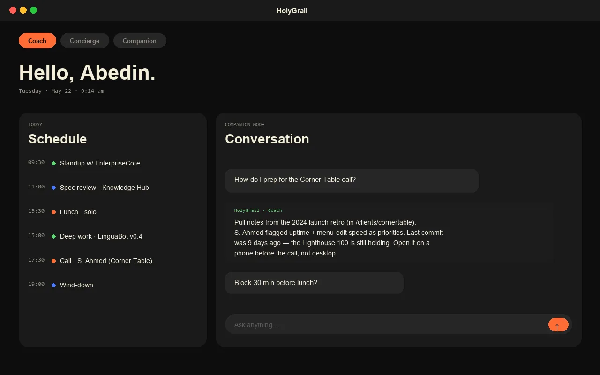

Desktop Live · 2025 Own product
HolyGrail.
I built HolyGrail as the personal life-OS I wanted but couldn't buy — a three-mode AI assistant with crisis detection and a built-in scheduler. Same backend, two clients: desktop and iPhone.

The problem.
Off-the-shelf AI assistants are general-purpose and stateless — they don't know your week, your contacts, your medication schedule, or the difference between you asking for help and you asking for help. I wanted one assistant that does, and that runs on my own database — not someone else's analytics pipeline.
What I built.
- Three modes. Coach (long-term goals), Concierge (today's tasks), and Companion (open conversation with crisis-detection guardrails).
- Crisis detection. Sentiment + keyword tripwires that escalate to local emergency contacts and surface real resources — without sending the conversation to a third party.
- Scheduler. Calendar + reminders + recurring-task engine. Lives in the same Postgres as the chat history.
- Two clients, one backend. Electron desktop + Expo iOS, both speaking to the same FastAPI on Neon Postgres.
- Owned data. Your conversation, your calendar, your crisis log — all in your database. Nothing leaves unless you point it at an LLM API.
How I shipped it.
- Backend before clients. FastAPI + SQLAlchemy + alembic, fully tested in isolation before any UI.
- Desktop next. Electron shell wrapping a React UI. Worked on a plane before iOS even existed.
- iOS last. Expo because I'm not maintaining two native codebases for an app I built for myself.
- Crisis-detection guardrails. Written and tested against real transcripts before any user-facing AI feature went live.
Software that knows you, owned by you.
— the working principle
Like what you read? I can ship this for you.
Send a one-line scope and I'll quote within 24h. Three engagement shapes — fixed-price MVP, embeddable widget, or maintenance retainer.